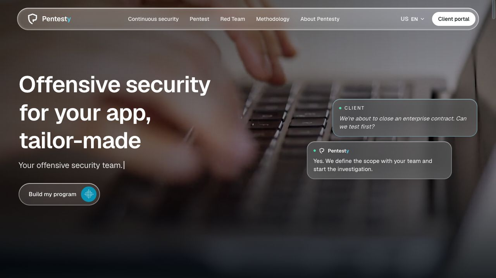
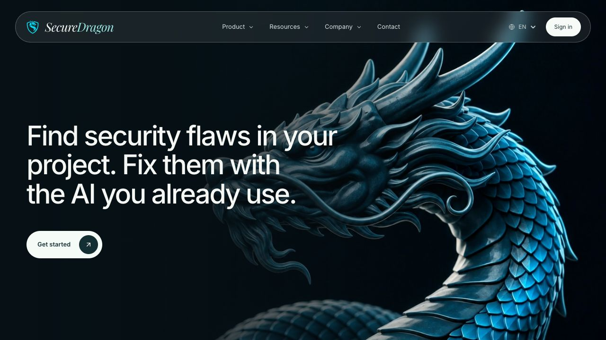

Engenheiro de IA Criador de produtos
Josan Johnata.
Construo produtos com IA para resolver problemas reais.
Desenvolvo software que conecta inteligência artificial, engenharia de produto e necessidades de negócio.
Portfólio
Confira alguns dos meus trabalhos.
Conheça os produtos e projetos que desenvolvo, de aplicações com inteligência artificial a ferramentas de segurança e desenvolvimento web.

Pentesty
Segurança ofensiva para empresas
SecureDragon
Segurança para aplicações criadas com IASobre mim
Engenharia de produto com uma base em segurança.
Sou Josan Johnata, engenheiro de IA em Fortaleza, Ceará. Meu trabalho une desenvolvimento de software, inteligência artificial aplicada e segurança da informação.
Hoje, meu foco está na FoxApply e na Pentesty. Gosto de acompanhar o produto por inteiro: entender o problema, construir a solução e evoluir o que as pessoas e as empresas usam no dia a dia.
LinkedInIA aplicada
Integração de modelos de linguagem, agentes e automação de processos dentro de produtos.
Engenharia de software
Interfaces, APIs, dados e integrações que sustentam a experiência do usuário.
Segurança ofensiva
Investigação de vulnerabilidades e tradução de achados em ações de correção.
Tecnologias que fazem parte dos projetos
Resumo
Mais sobre minha trajetória.
A experiência atual em produtos se apoia em formação em software e segurança, além de uma trajetória liderando equipes.
Experiência profissional
Engenharia de produto e IA
Atualmente
FoxApply & Pentesty
Construção e evolução de produtos que aplicam IA à carreira e à segurança ofensiva de empresas.
Engenheiro de software
Jan 2024 — Ago 2026
Questrade Financial Group
Desenvolvi funcionalidades para aplicativos móveis com React Native e TypeScript em um ambiente financeiro regulado, incluindo a verificação de identidade na abertura de contas.
Atuei com testes unitários e de integração usando Jest e React Testing Library, revisão de código e decisões de arquitetura.
Engenheiro de software · Desenvolvedor de aplicativos
Nov 2021 — Jan 2024
Méliuz
Engenheiro de software full stack · Nov 2021 — Jul 2022. Desenvolvimento web e de microsserviços com Python, PHP, Node.js, Docker, SQL/NoSQL e AWS. Com o time, contribuí para reduzir perdas de rastreamento de compras de cerca de 30% para menos de 5%.
Desenvolvedor de aplicativos · Jul 2022 — Jan 2024. Integrações com APIs nativas, SDKs e navegadores integrados ao aplicativo; testes automatizados e CI/CD com GitHub Actions. Desenvolvi a funcionalidade de favoritos no aplicativo, que contribuiu para um aumento de quase R$ 44 milhões no GMV da empresa.
Administrador de redes
Abr 2017 — Out 2021
WebMais Solutions
Administração e monitoramento de redes, servidores, roteadores e switches; suporte técnico e diagnóstico e resolução de incidentes de conectividade.
Liderança de equipe · Expansão de redes
2013 — 2018
Vip Net Solutions
Liderei uma equipe de 8 pessoas na expansão de redes. O trabalho levou conectividade a mais de 5 mil clientes e incluiu a implantação de mais de 200 km de fibra óptica.
Formação acadêmica
Graduação
Cursando
Estácio
Engenharia de Software
Graduação
Jan 2019 — Dez 2022
UNIASSELVI
Segurança da Informação
Pós-graduação
Jan 2023 — Jan 2024
Descomplica
Desenvolvimento Full Stack
Formação complementar
Formação complementar
Em andamento
Desec Academy
Novo Pentest Profissional
Formação complementar
Nov 2020 — Fev 2021
IGTI
Análise de Cibersegurança
Formação complementar
Ago — Set 2021
PMG Academy
Cibersegurança
Certificações
Especialização
Jun 2021
ON Security
Cibersegurança: segurança em nuvem e infraestrutura de servidores.
Certificação
Jun 2020
CertiProf
Cyber Security Foundation: certificado profissional baseado no CyBOK.
Idiomas
Português
Nativo
Inglês
Fluente
Francês
Básico
Alemão
Básico
Contato
Vamos construir algo útil?
Para conversar sobre inteligência artificial, desenvolvimento de produto ou segurança ofensiva.
josanjohnata@gmail.com